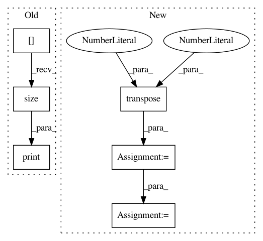

7982a664d710a604a5157c542180a20c87cf4216,onmt/modules/ImageEncoder.py,ImageEncoder,forward,#ImageEncoder#Any#,39
Before Change
hidden_t = []
for row in range(input.size(2)):
print(input[:, :, row, :].size())
row_outputs, row_hidden_t = self.rnn(input[:, :, row, :], None)
hidden_t.append(row_hidden_t)
return hidden_t
After Change
// // (batch_size, H, W, 512)
all_outputs = []
for row in range(input.size(2)):
inp = input[:, :, row, :].transpose(0, 2).transpose(1, 2)
outputs, hidden_t = self.rnn(inp)
all_outputs.append(outputs)
out = torch.cat(all_outputs, 0)
return hidden_t, out
In pattern: SUPERPATTERN
Frequency: 3
Non-data size: 6
Instances
Project Name: OpenNMT/OpenNMT-py
Commit Name: 7982a664d710a604a5157c542180a20c87cf4216
Time: 2017-06-02
Author: srush@seas.harvard.edu
File Name: onmt/modules/ImageEncoder.py
Class Name: ImageEncoder
Method Name: forward
Project Name: OpenNMT/OpenNMT-py
Commit Name: 7bb2fb11ad088d9aa27c9adf344f3ddd1324ced7
Time: 2017-05-31
Author: srush@seas.harvard.edu
File Name: onmt/modules/ImageEncoder.py
Class Name: ImageEncoder
Method Name: forward
Project Name: asappresearch/sru
Commit Name: bd570b58cefa57062f8c14e06b83800c52f4925a
Time: 2019-09-18
Author: hp@asapp.com
File Name: sru/sru_functional.py
Class Name: SRU
Method Name: forward